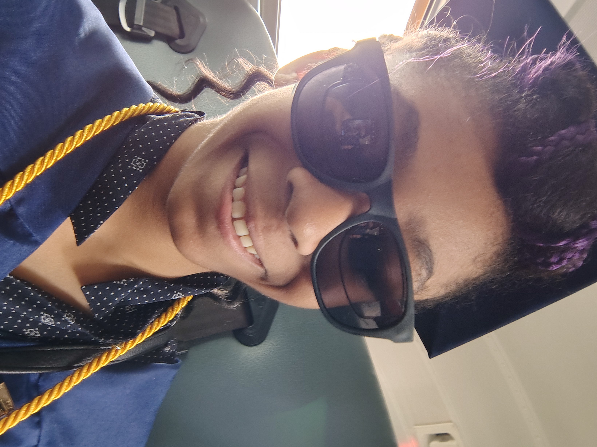
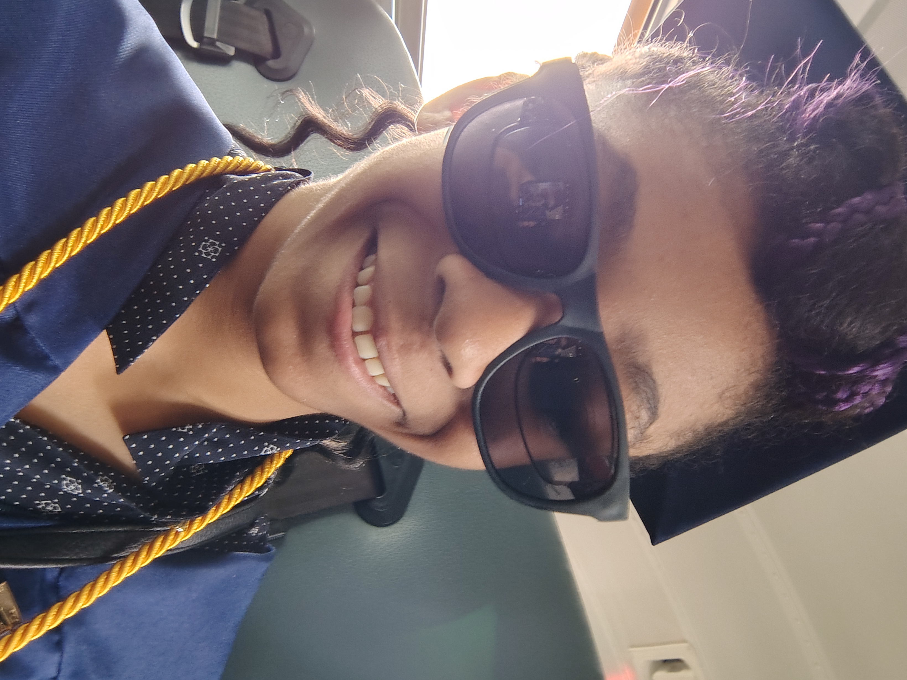

These are a few things I really love, click a bubble to find out!
My name is Jehanna Fisher, I am a 17-year old African American. It took me a while to apprieciate my skin color, hair, beliefs, and background, but now I can say that I am happy to be called Jehanna Fisher. Growing up, I was homeschooled. I spent a lot of time isolated from the rest of the world, spending most of my time with other homeschool kids. It wasn't until I entered 7th grade when I figured out the classmates around didn't look or act like me. Nonetheless, that didn't stop me from seeing my self-beauty.